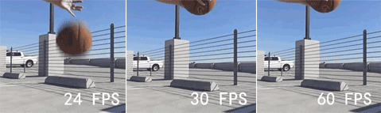

顯示卡、螢幕
VIDEO CARD & MONITOR
作為電腦的輸出，顯示卡是用來控制螢幕顯示甚麼的，把電腦的資訊都輸出到螢幕上，因此可以用來繪圖以及玩遊戲，以及達成任何視覺介面
產品定位:GT是非常入門的型號 GTX通常是桌機用或好一點的筆電 MX是筆電專用 RTX表示GTX進階版支援光線追蹤(RT CORE)以及深度學習(TENSOR CORE)
第幾系列:數字越大代表越後面推出以及效能更好
效能分數:分數越大在同系列越好
細項分類:在同一個型號下的分類，沒有級代表為一般版,其他常見的還有SUPER(效能介於TI與一般版)，OC(比一般版好一點,因為有超頻),GAMING(通常為有RGB的版本)
第幾系列:數字越大代表越後面推出以及效能更好
效能分數:分數越大在同系列越好
細項分類:在同一個型號下的分類，沒有級代表為一般版,其他常見的還有SUPER(效能介於TI與一般版)，OC(比一般版好一點,因為有超頻),GAMING(通常為有RGB的版本)
 產品系列:Radeon RX為AMD的遊戲顯卡系列
產品系列:Radeon RX為AMD的遊戲顯卡系列第幾代:越大代表越後面出
效能分數:越大代表效能越好
細節分類:XT代表增強版, GAMING(通常為有RGB的版本)
內顯VS獨顯
- 內顯是在CPU內部的，無法被獨立分開，而獨顯是獨立顯示卡
- 獨顯通常比內顯效能好非常多
- 沒內顯的CPU也會比較便宜
繪圖卡VS遊戲卡
- 遊戲卡和繪圖卡的發展方向不同
- 繪圖卡架構更完整但沒有GPU Boost
- 遊戲顯卡著重在時脈衝高，省去了繪圖顯卡的完整性
- 少有繪圖和遊戲兼具的顯卡(ex:Nvidia RTX Titan)
- 繪圖顯卡通常更貴
影片成像與FPS
- 即Frames per second，每秒螢幕的畫面數，單位為赫茲
- 動畫的原理即是用一張張圖片藉由視覺暫留跑出動態感
- 100hz以上大概就無法感受到差異了
顯示卡安裝指南
- 不管是DDR5還是DDR6的顯卡都是使用PCIE 3.0x16 插槽，且不管是多舊多新的主機版都可兼容
- 顯卡必須配合螢幕才能發揮最好效能
- 內顯的輸出孔在背板上通常為直的,而獨顯的為橫的，必須插對，否則會用到內顯輸出到螢幕
- 顯卡長度要特別注意機殼是否能容納
- 顯卡太長注意主機板是否能承受，來決定是否要使用顯卡支架，否則主機板可能會彎曲受損或造成顯卡接觸不良
- 要注意電供有沒有提供足夠供電線(6PIN OR 8PIN)
- 想要了解更多顯卡比較可以查看顯卡天梯
螢幕
螢幕是電腦重要的輸出，是電腦重要的助手
- 透過顯卡，控制螢幕的燈光變化來顯示資訊
- 螢幕也有自己的刷新(FPS)上限
常見螢幕輸出孔位
- VGA(類比訊號)(又稱D-Sub)
- 最新的VGA最大解析度可到2K
- 色彩表現最差
- DVI
- 可分為多版本
- HDMI
- 同時支援影像與音訊
- 不斷演進，都可向下兼容
- DisplayPort
- 能支援8k解析度
太好顯卡遊戲沒有比較順暢的感覺?
- 一般來說當顯卡跟不上螢幕的刷新，就會造成卡頓
- 反過來螢幕跟不上顯卡給的圖片量，則會畫面撕裂，也就是螢幕上部分已經刷新了下一張圖,而另一部分還在上一張圖
解決畫面撕裂
- 開啟垂直同步(V-Sync)將顯卡限制輸出畫面達成和螢幕同步刷新率，但可能會有以下結果
- 造成畫面延遲
- 無法完美同步鍵盤和滑鼠做的操作
- 造成顯卡效能無法完全發揮
- 開啟低延遲模式(NVIDIA)
- 使用有G-Sync(NVIDIA)或FreeSync(AMD)的螢幕,通常G-Sync的螢幕都比較貴
G-Sync
直接在螢幕中多加了一個晶片，這顆晶片內建了緩衝記憶體，負責和NVIDIA GeForce顯示卡溝通，G-Sync晶片從顯示卡讀取最新的畫面張數，依據不同顯示卡的效能等級，自動調整螢幕刷新率時間，以同步配合顯示卡的畫面輸出，只要螢幕刷新率有支援，從0到240Hz都能即時動態調整
FreeSync
不同於NVIDIA G-Sync需要獨立晶片的做法，FreeSync則是從連結介面的標準下手，整合DisplayPort Adaptive-Sync業界標準，可即時透過DisplayPort介面調整螢幕的刷新率，而目前最新HDMI介面的規格也可支援FreeSync。雖然不用在螢幕中多加晶片，FreeSync同步技術還需要搭配相容的DisplayPort或HDMI版本的螢幕及Radeon顯示卡。
螢幕選購指南
- 如要玩遊戲，應注意顯卡等級再挑選適合螢幕
- 不建議太小的螢幕使用曲面，應至少２８吋以上在選擇曲面
- 選購標示清楚的螢幕